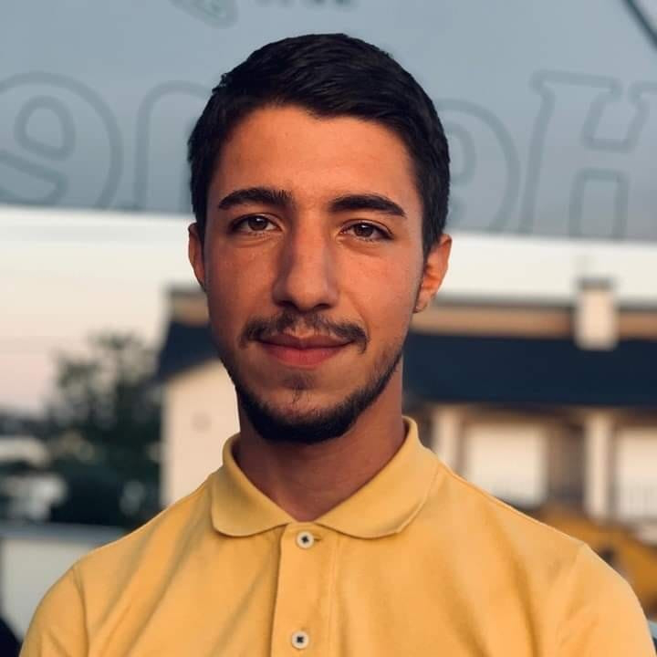

My Resume
Filipe Goncalves

Summary
Electricity and programming are both about understanding the rules and applying them to make things work.
After more than 10 years of being an Electric Technician, I finally decided to pursue what truly interests me: becoming a Web Developer.
Education
2016 – 2019
- Automation Robotics and Industrial Maintenance (CTeSP)Instituto Superior de Engenharia de Coimbra
2011 – 2014
- Electrical Technician Course (12º)Escola Secundária de Vagos
Work experience
01/2022 – Present
- Electrician - Elicom AS, Voss (Norway)
Electrical installations, Ferry boats and Hydro turbines
09/2020 – 12/2021
- Electrician - El Metier AS, Oslo (Norway)
Electrical installations
09/2019 – 06/2020
- Wind Turbine Technician - Endiprev, S.A, Porto (Portugal)
Preventive Maintenance and repair of wind turbines
03/2018 – 08/2019
- Industrial Maintenance and Infrastructures Technician - J.Prior, fábrica de plásticos, lda. Indústria de Plásticos
Installation and maintenance of injection (horizontal, vertical) and other machines
Hydraulic and electric machines with a clamping force between 40 ton and 1150 ton
05/2013 – 08/2015
- Electricity Technician - Atena Automação Industrial, Palhaça
Construction of assembly lines at Renault Cacia (ATENA’s client)
Skills
- Solving challenging tasks in a creative and eficient way
- Fast learner with a curious and open mindset
- Electricity & Electronics (with many years of experience)
- Collaboration is one of my greatest strengths. Teamwork = Better results
Other